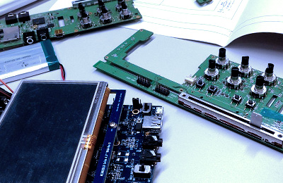

JD Soundは未来に向けたオーディオ機器の開発と技術研究に取り組み、
新たな分野に挑戦し続ける、デジタルオーディオ技術のリーディング・カンパニーです。
デジタルオーディオ機器の設計・開発
弊社のメイン事業は携帯音楽プレーヤーやカラオケ機器等のデジタルオーディオ機器の設計と開発です。 回路設計から部品選定、筐体デザイン、ソフトウェア開発まで一貫してサポート致します。
弊社初の製品となりましたポータブルＤＪ機器「GODJ」は現在日本国内はもちろんアジア、アメリカ、ヨーロッパ等世界各国で販売され、非常に高い評価を得ています。
弊社技術の特徴は低消費電力と高音質。「GODJ」は２つのスクリーンと多彩な再生機能を搭載しながらも12時間以上の連続再生時間を達成し、またポータブルオーディオ機器としては最高レベルの１００ｄＢのＳＮ比を実現しました。
エフェクタ、ゲーム機、学習機などの開発の実績もございますので、お気軽にお問い合わせ下さい。

デジタルオーディオ技術のライセンス販売
これまでの開発で培って参りましたユニークなデジタルオーディオライブラリを、ライセンス販売という形で提供しています。 弊社が独自開発したライブラリはメモリ使用量が少なく、また必要とされる動作周波数が極めて低いため、リソースの限られた既存製品にアドオン的に組み込む事が可能です。
新たなサウンドエフェクトや解析機能をソフトウェアとして組み込む事で、ハードウェア構成を変えずに製品のバージョンアップを図ることができます。
【現在提供可能なライブラリ】
・ リアルタイムＢＰＭ＆ビート解析
・ エフェクト（フェイザー、フランジャー、ディレイ、コンプレッサー等）
・ デジタルクロスフェーダ
・ オートＤＪ（全自動ミックス機能）
デジタルオーディオ技術の研究
上記２つの事業を支える技術開発に加え、常に新しいデジタルオーディオ技術の研究を行っています。 デジタルオーディオの分野で十年以上の実績のあるエンジニア達が、ＢＰＭ＆ビート解析、エフェクタ設計、デジタルオーディオコンテンツ制作などに日々取り組んでおります。
デジタルオーディオに関する受託開発も承りますのでお気軽にご相談下さい。
| 商号 |
株式会社JDSound |
| 代表取締役 |
宮崎晃一郎 |
| 資本金 |
300万円 |
| 設立日 |
2012年2月2日 |
| 事業内容 |
デジタル音楽機器の設計 開発 販売 |
| 所在地 |
〒980-0802
宮城県仙台市青葉区二日町13-18ステーションプラザビル6F |
| TEL |
022-725-0009 |
| アクセス |
仙台市地下鉄南北線北四番丁駅から徒歩1分 |